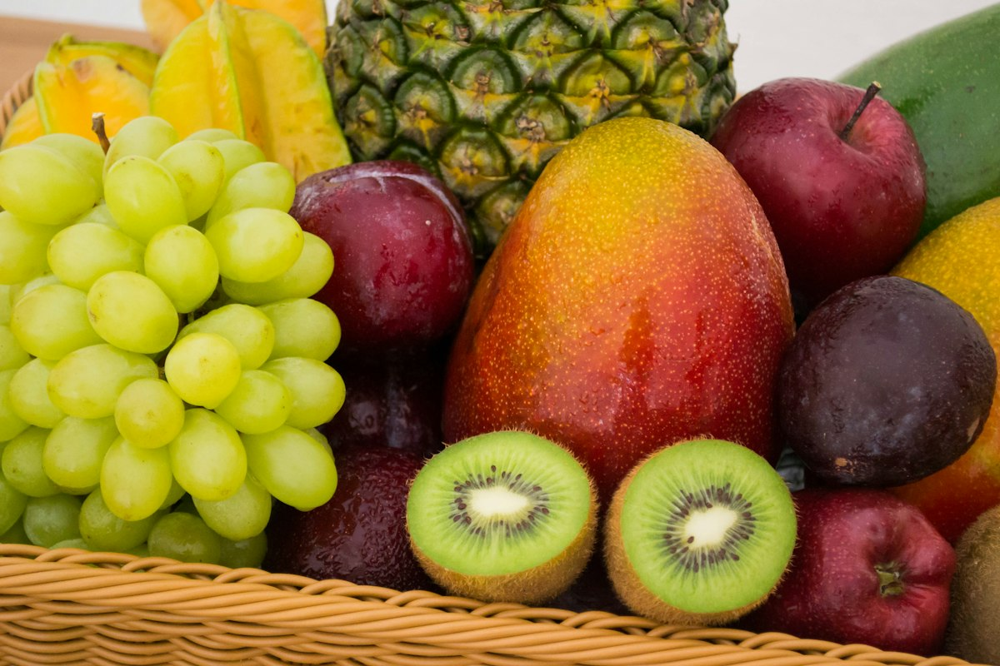
Fresh Fruits
Tropical Fruits (Banana & Guava)
Naturally tree-ripened Nendran bananas and sweet guavas from Theni foothills.
View in CatalogueDiscover quality farm produce, connect with dedicated growers, and build reliable agricultural partnerships from farm to market.
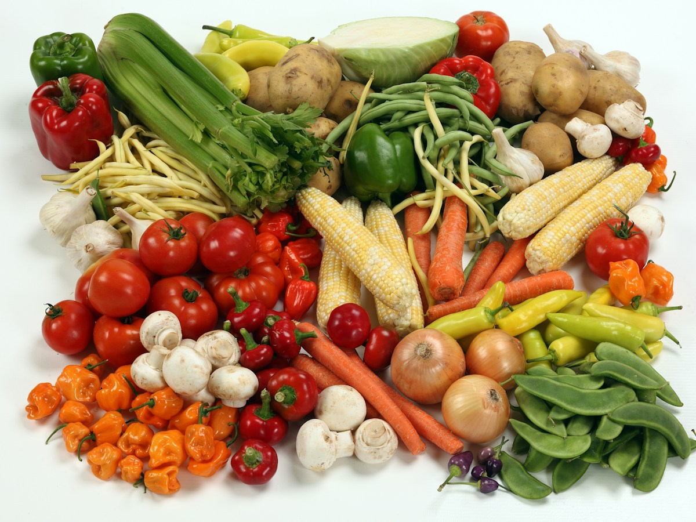
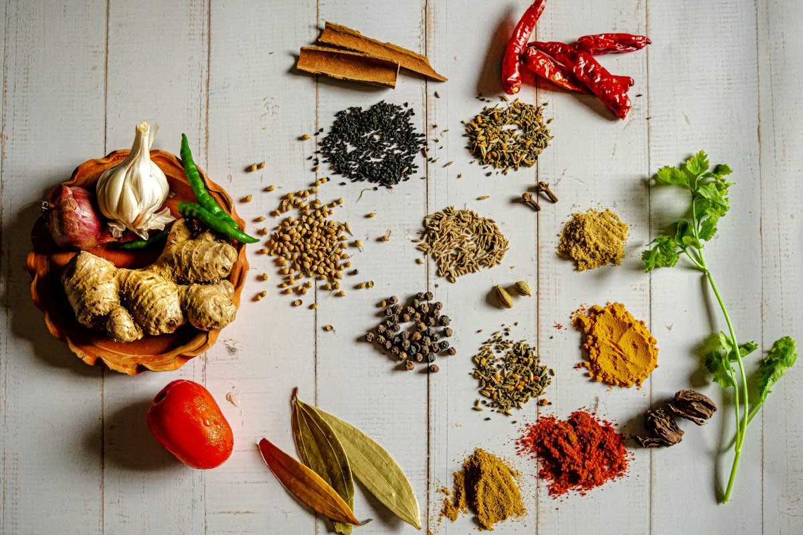
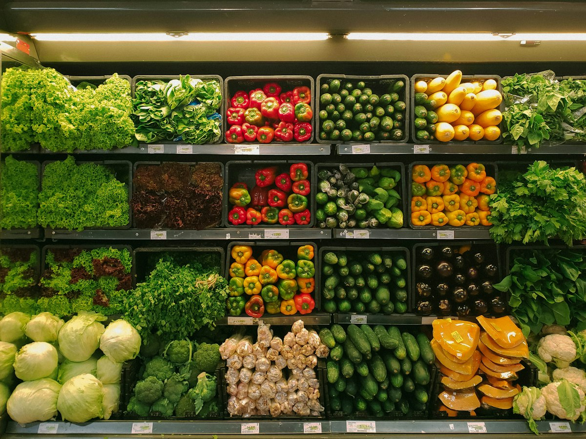
Our decentralized village logistics network ensures that perishable vegetables, seasonal bananas, and organic pulses are gathered at the crack of dawn. Produce is cleaned, sorted, and packed under shaded rural collection shelters to preserve freshness, moisture, and crisp flavour.
Trade buyers receive real-time lot updates through our digital procurement desk, ensuring absolute predictability in delivery schedules and shelf life.
Pre-cooling and shaded handling reduce post-harvest moisture loss.
Scan to trace exact village cluster and harvest date.
Hand-sorted fruits, groundnuts, spices, and pure cold-pressed oils prepared by our member clusters.

Naturally tree-ripened Nendran bananas and sweet guavas from Theni foothills.
View in Catalogue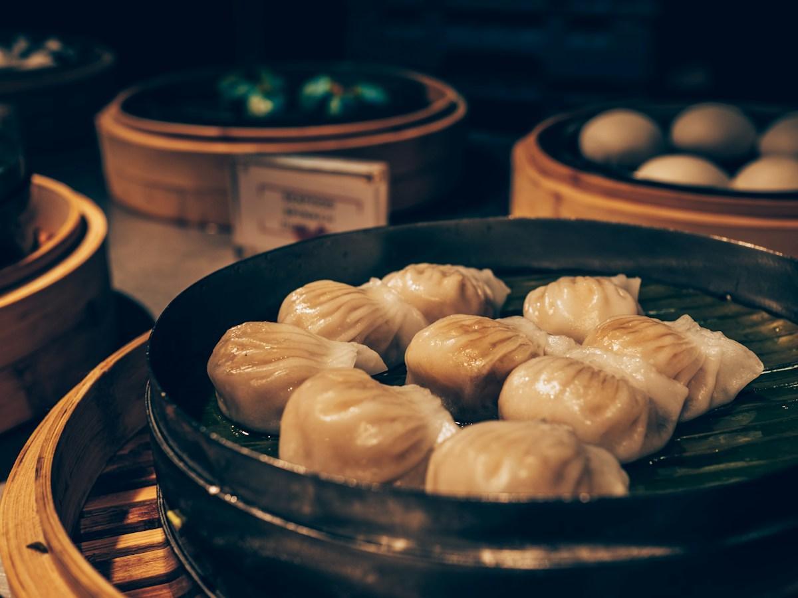
Sun-dried bold peanut kernels with high natural oil yield and sweet crunch.
View in CatalogueTriple-cleaned natural white and black sesame seeds rich in healthy plant calcium.
View in CatalogueDeep golden sun-dried turmeric fingers tested for maximum curcumin potency.
View in Catalogue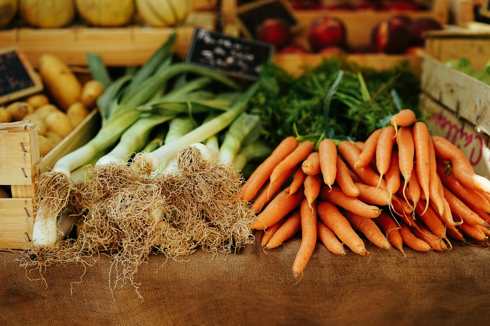
Aromatic, bold garbled black peppercorns grown in shade canopy plantations.
View in Catalogue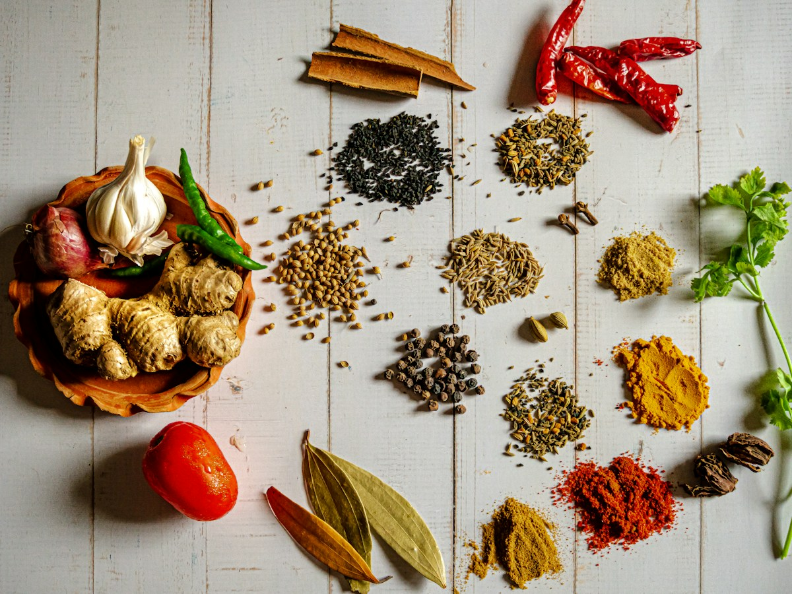
Traditional wooden chekku cold-pressed coconut oil retaining natural lauric acid.
View in CatalogueDaily picked vine-ripened tomatoes, tender brinjals, gourds, and leafy greens.
View in Catalogue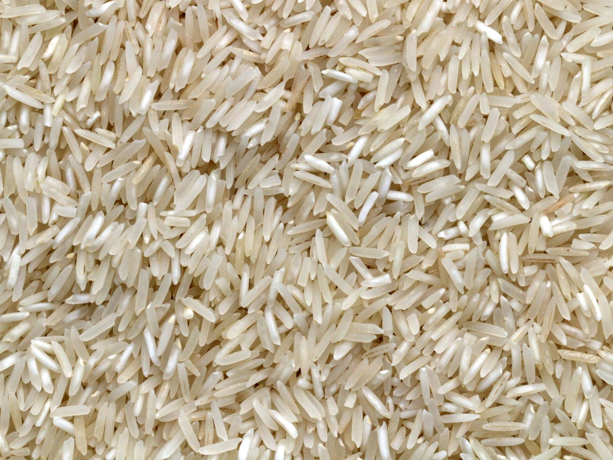
Hand-sorted protein-dense split pigeon peas with zero synthetic polishing oils.
View in CatalogueMeet the visionary farmers transforming rural agriculture across our member clusters.
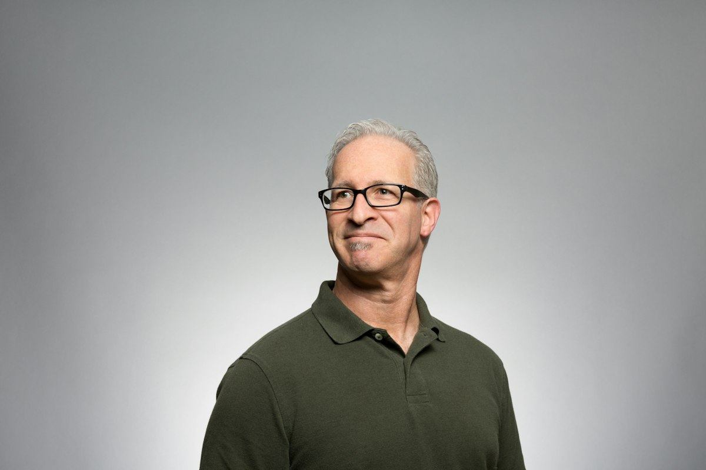
"For two decades, erratic monsoons threatened my five acres of dryland. Through GreenRoots, sixty of us formed a dedicated foxtail and pearl millet cluster. The company supplied drought-tolerant native seeds, set up a local de-hulling machine, and linked our harvest to organic packaged brands."
"Today, we don't worry about middlemen undercutting us. We earn a guaranteed minimum benchmark plus a year-end patronage bonus. Our children now see farming as a dignified, profitable enterprise."
Every kilogram of agricultural produce passing through GreenRoots satisfies strict safety and ethical standards.
Field officers inspect standing crops 20 days prior to harvest, verifying zero use of banned chemical sprays and noting expected moisture indices.
Grain moisture is measured with laboratory-grade digital meters at collection. Sun-drying protocol bonuses are awarded to farmers delivering optimal moisture (under 12%).
Grains are immediately transferred into food-grade, multi-layer hermetic bags that block moisture and insects naturally without toxic chemical fumigants.
Scenes of lush green cultivation, community harvesting, and village aggregation across our member regions.
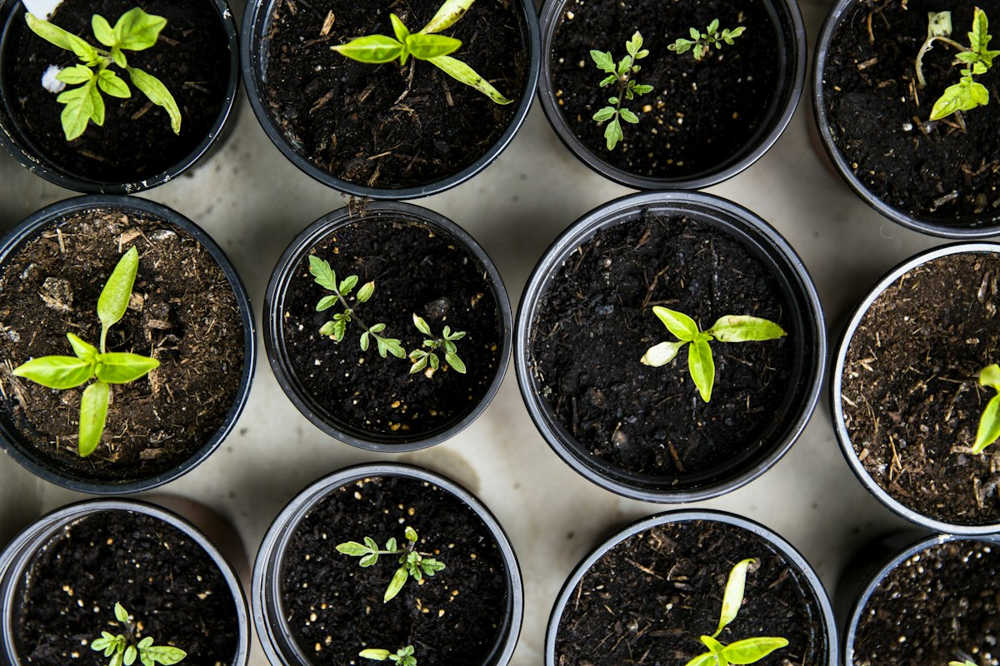

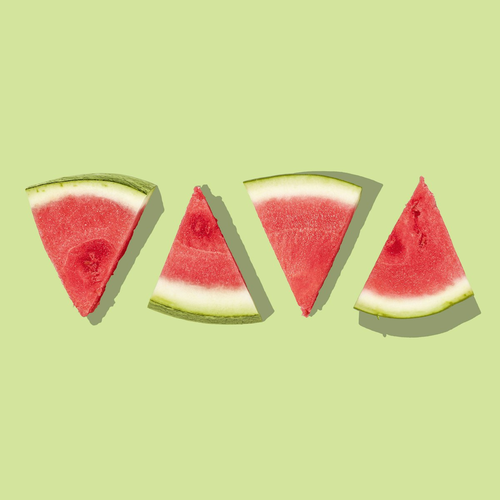
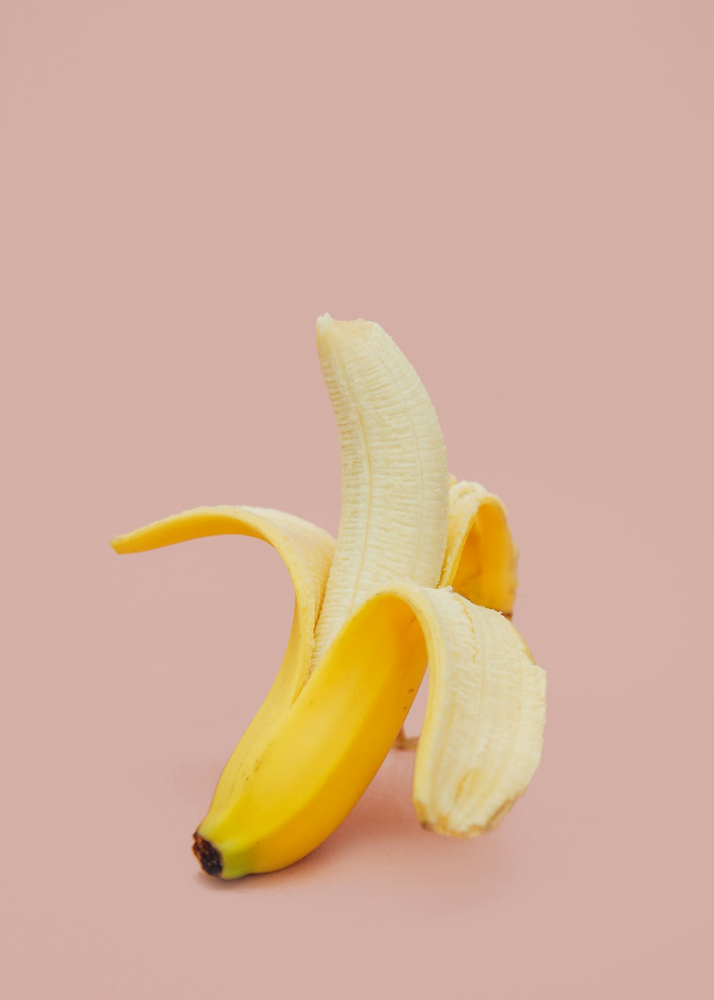
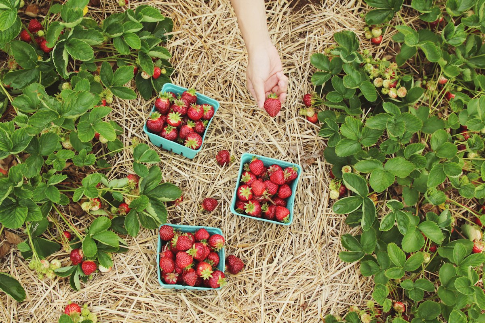

Our centralized 25,000 sq.ft. aggregation depot features climate-controlled ventilation, electronic weighing bridges, and automated Sortex cleaning lines. This infrastructure prevents post-harvest spoilage and gives our members the power to store grain until market prices peak.
Whether you are a farming household looking for reliable prices or a food brand needing ethically sourced commodities, GreenRoots is your trusted partner.